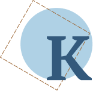

огда я был маленький, меня отвезли жить к бабушке. У бабушки над столом была полка. А на полке пароходик. Я такого никогда не видал. Он был совсем настоящий, только маленький. У него была труба: жёлтая и на ней два чёрных пояса. И две мачты. А от мачт шли к бортам верёвочные лесенки. На корме стояла будочка, как домик. Полированная, с окошечками и дверкой. А уж совсем на корме — медное рулевое колесо. Снизу под кормой — руль. И блестел перед рулём винт, как медная розочка. На носу два якоря. Ах, какие замечательные! Если б хоть один у меня такой был!Он не пошёл по прямой дороге домой, где его ждала бы тёплая комната и чашка горячего шоколада. Вместо этого он направился в сторону озера. Сегодня была пятница, а по пятницам у него была своя, особенная традиция — прогулка к дедушке Дастану, который в это время всегда сидел на берегу, подставляя лицо зимнему ветру и глядя на бесконечную водную гладь.
Я сразу запросил у бабушки, чтоб поиграть пароходиком. Бабушка мне всё позволяла. А тут вдруг нахмурилась:
— Вот это уж не проси. Не то играть — трогать не смей. Никогда! Это для меня дорогая память.
Я видел, что, если и заплакать, – не поможет.
А пароходик важно стоял на полке на лакированных подставках. Я глаз от него не мог оторвать. А бабушка:
— Дай честное слово, что не прикоснёшься. А то лучше спрячу‑ка от греха. — И пошла к полке.
Я чуть не заплакал и крикнул всем голосом:
— Честное-расчестное, бабушка. — И схватил бабушку за юбку. Бабушка не убрала пароходика.